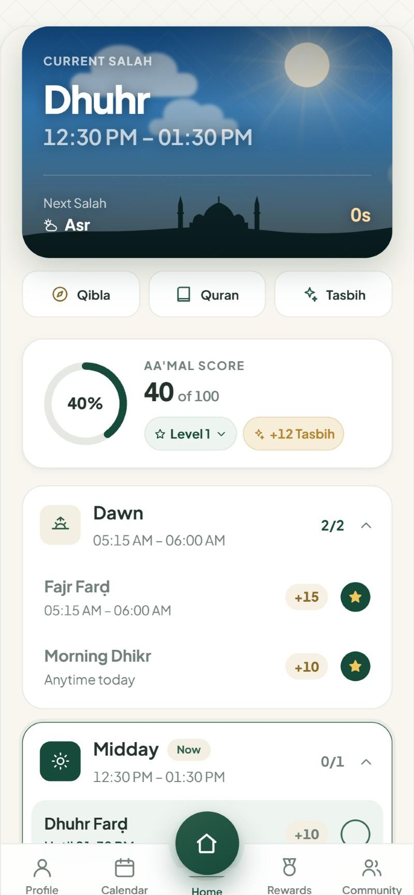
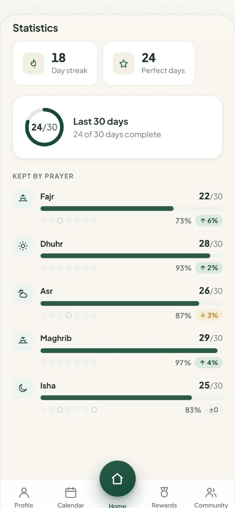
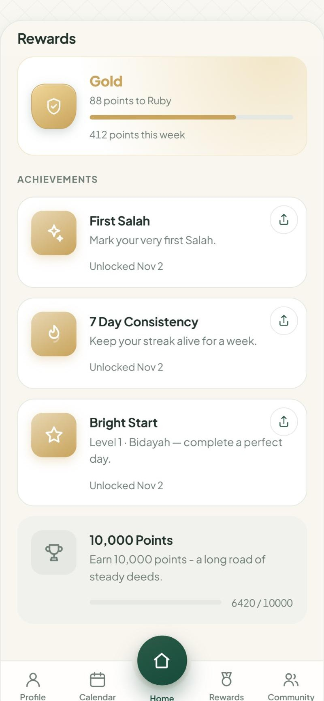
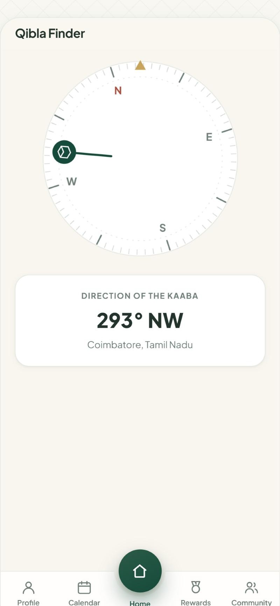

A Sadaqah Jariyah by the Feedingo Foundation
Track your journey
to Jannah.
Meezaan keeps the whole day of worship in one place: the five Farḍ Salah and their Sunnah, Witr, morning and evening Dhikr, Quran and Sadaqa. Mark each deed as you do it, and watch a quiet record build itself.
Android. English, தமிழ் and हिन्दी. Free of charge, with no advertising inside.

- Free of charge, always
- No advertising
- Nothing sold, ever
- Works without signal
The app
One quiet place
for the whole day.
Mark each deed as you do it. Every deed carries points, and your day is complete when you reach your level’s target. Streaks, rewards and the community board all follow from that, so there is nothing else to keep up with.
Prayer times are worked out on your own phone from your location, using the calculation method and madhab you choose. Nothing is calculated on a server, and the day you have recorded stays readable when you are offline.
- 21
- deeds across the day, from Tahajjud to Sadaqa
- 3
- levels, so a child and an adult are measured fairly
- 0
- adverts, advertising trackers, or payments
Everything inside
Pick a part of the app.
Ten things Meezaan does, in plain words. The phone shows the screen each one lives on, captured from the build that is going to the Play Store.
Your day, deed by deed
Twenty one deeds make up a full day, from Tahajjud before dawn to the Sadaqa you give before you sleep. Each one opens in its own window, so Fajr can be marked at Fajr, and Witr still belongs to last night when you mark it at one in the morning. The day is grouped into parts, and the part you are living in is already open when you arrive.
- One tap to keep a deed, one to take it back
- A gold star and its points the moment it is kept
- Deeds that have no hour, like Quran and Sadaqa, stay open all day
- Late marking can be allowed or refused in Settings
- A floating progress button shows the day without scrolling
Prayer times worked out on your phone
Times are calculated on the device itself from your coordinates, never fetched from a service. The card at the top of the home screen names the Salah you are in, how long is left of it, and what comes next, over a sky that follows the real sun from dawn to night.
- Thirteen calculation methods, including Karachi, Umm al-Qura and ISNA
- Shafi or Hanafi for the Asr time
- A high latitude rule for places where night barely falls
- Twelve or twenty four hour clock, your choice
- A home screen widget with the next prayer, updated by the phone
Called, not nagged
Every reminder is scheduled on the phone, so it arrives with no signal and nothing is sent from a server. For the Farḍ prayers you can choose a full alarm screen that opens over the lock screen the way a clock alarm does, with the time, the prayer, and a snooze.
- Silent, a notification, or a full alarm, chosen per deed
- Exact alarms, so a reminder is not held back by the system
- Reminders survive a restart and a change of timezone
- Guided help for Xiaomi, Vivo, Oppo and other strict battery managers
- Nothing is tracked: we never learn whether you opened one
Which way to face
A compass that turns with the phone and points at the Kaaba, with the exact bearing written underneath. When a phone has no reliable magnetometer, or the reading wanders, the bearing alone is still correct and can be used with any ordinary compass.
- Live dial, calmed so it does not spin at north
- The bearing in degrees, with the nearest cardinal point
- Works from the location already saved for your prayer times
- One tap from the home screen, next to the Quran and the tasbih
Quran, and the tasbih after Salah
The Quran reader carries the Arabic text with a translation in your language and recitation you can listen to. The Daily Tasbih counts the six rounds that follow a prayer, keeps the count on the phone, and adds its own points to the day without taking anything away from the Salah.
- Surah by surah, with translation and audio recitation
- Six rounds a day: SubhanAllah, Alhamdulillah, Allahu Akbar and more
- A gentle vibration at the end of each round
- Counting happens on the phone: no counts are uploaded, only the day's mark
Three levels, one honest measure
A child keeping five prayers and an adult keeping every Sunnah should both be able to finish a day. Level 1 asks for the Farḍ, Witr, the daily Dhikr and Quran. Level 2 adds the Sunnah and Sadaqa. Level 3 is the whole day, Tahajjud included. You can move between them whenever you like.
- Each level has its own target: a perfect day is a perfect day at any level
- A level is kept for a week before it can be changed again
- Points are set centrally and can be corrected without a new app release
- Days already recorded keep the score they were marked with
The month, and where it went
The calendar shows every day of the month at a glance, full, partial or empty, in both the Hijri and the ordinary reckoning. Open any day to see exactly what was kept. The statistics screen turns that into the truth about your habits: which prayer slips, which holds, and how the month compares with the last one.
- Hijri dates and the months that matter, Ramadan marked
- Any past day can be reopened and read
- Kept percentages for each prayer, with last week beside them
- Streaks, perfect days, total points and the tasbih, all counted
- A start date, so the record begins the day you joined and not before
Something to keep for the effort
Twenty two achievements mark the milestones: the first Salah, a week held, a perfect day at your level, ten thousand points. Each one unlocks a certificate you can save or send, drawn by the app itself. Leagues run alongside, from Bronze to Platinum, and reset so that nobody is left behind forever.
- Certificates drawn at full resolution, ready to share
- A league badge that moves with the points of the week
- Locked achievements still show how far along you are
- An unlock is celebrated once, in the app, and never pushed at you again
Keep good company
Add a friend by scanning the code on their phone, or send them a card carrying yours. You see each other’s level, streak and standing. You do not see, and cannot see, their email address, phone number, date of birth, city or location. The community board is optional and can be left in a single tap.
- Friend codes by QR, from the camera or from a photo someone sent
- Requests, with a quiet notification when one arrives
- A friend's profile: their streak, their league, their recent days
- Leave the board whenever you like and your name disappears from it
Your language, and your data
Meezaan speaks English, Tamil and Hindi, and the whole app moves with it, down to the names of the deeds. What it keeps about you is the little it needs to show your day on any phone, and the policy says so in plain words rather than in paragraphs of law.
- English, தமிழ் and हिन्दी, switched in Settings
- Works offline: your day is marked now and sent when the signal returns
- Delete account removes your profile, your record, your points and rewards
- No advertising, no advertising identifiers, nothing sold to anybody
- A first run tour that shows you around, once
Preview
The app, as it is.
Real screens from the build going to the Play Store, not drawings of one.



Levels
Measured against
what you can carry.
-
Level 1
For children and new starters
The five Farḍ Salah, Witr, the daily Dhikr and Quran. A gentle beginning, and a full day is still a full day.
100 points is a perfect day -
Level 2
The usual daily practice
Farḍ with their Sunnah, Dhikr, Quran and Sadaqa. The shape of an ordinary adult day, kept honestly.
150 points is a perfect day -
Level 3
The full day
Tahajjud, Ishraq, Duha, Awwabin and every Sunnah alongside the Farḍ. For those who want the whole of it.
200 points is a perfect day
A level can be changed whenever you like. The points are set by the Foundation and can be adjusted for everyone, so the scale stays fair as the app grows.
Our vision
A generation for whom Salah is not something to be remembered, but the rhythm the day is built around.
Our mission
To put the whole day of worship into one honest app, free of charge and free of advertising, so that nothing stands between a person and the habit they are trying to keep.
A note on scores
Meezaan scores are for personal motivation only. They do not represent your actual reward with Allah. The acceptance and reward of every deed depend upon sincerity, which only Allah knows. Points, levels, streaks and time windows are encouragement, not rulings of Islamic law. When in doubt, follow your masjid and ask a qualified scholar.
Feedingo Foundation is a youth movement that empowers young people to make a difference in their communities. It envisions a world where every young person is able to make a positive impact where they live.
Its mission is to inspire and involve youth in social work that does not depend on money, and through mentorship and encouragement to equip them to contribute in ways that last. Meezaan is offered in that spirit: a Sadaqah Jariyah, built once and given away, with no price and no advertising attached to it.
- 20+
- Regions
- 100+
- Youngsters
- 200+
- Initiatives
- 500+
- Success stories
Your data
We keep the little
we need, and no more.
Your name, email address and the record of what you marked, so your day and your history are yours on any phone. A single coarse location for prayer times, which no other user ever sees. That is close to the whole of it, and the full list is written out plainly in the policy.
- No advertisingNo ad networks, no advertising identifiers, no profiling.
- Nothing is soldYour record is never sold, rented or shared for marketing.
- You can erase itDelete account removes your profile, record, points and rewards.
- The camera stays localUsed only to read a friend’s QR code. No photo is taken, kept or sent.
Meezaan is almost here.
The Android build is on its way to the Play Store. Write to us and we will tell you the day it is live, or ask for the test build if you would like to try it early.
Android 5.1 and above. Around 12 MB. No account needed to look around.
Contact
Talk to the people
who built it.
Coimbatore, Tamil Nadu 641008, India